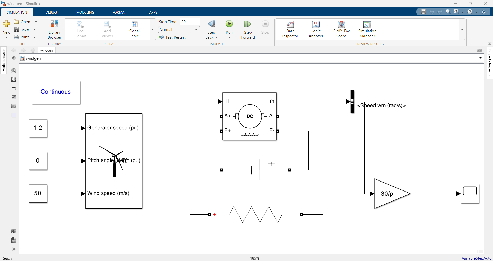
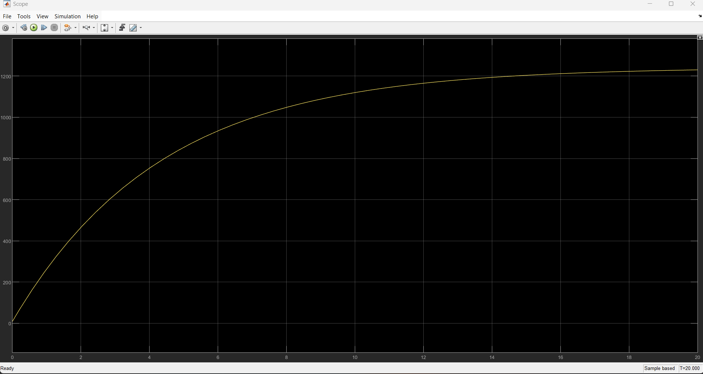

23/02/2026 (Monday)
Date
Aim / Objectives
To design and simulate wind power generation using a DC motor in MATLAB Simulink.
Notation
| Notation | Description | Unit |
|---|---|---|
| V | Voltage | Voltage (V) |
| I | Current | Amperes (A) |
| p | Power | Watts (W) |
| ω | Angular velocity | Radians per second (rad/s) |
| v | Wind speed | Meters per second (m/s) |
Introduction
Wind energy is a renewable energy source that converts kinetic energy into electrical energy. In this experiment, a DC motor is used to simulate the operation of a wind turbine. MATLAB Simulink is used to model the system and analyze the output characteristics for different wind speeds.
Note: MATLAB/Simulink provides powerful tools for modeling and simulating renewable energy systems with high accuracy.
Apparatus
- Computer with MATLAB Simulink
Theory
Wind turbines convert wind energy into mechanical energy through rotating blades, which is then converted into electrical energy using a generator. In simulation, a DC machine represents the generator. The output depends on parameters such as wind speed, pitch angle, and generator characteristics. Increasing wind speed increases turbine speed and output power.
Circuit Diagram

Procedure
- Required components were selected from Simulink → Simscape → Electrical → Specialized Power Systems → Fundamental Blocks.
- A new Simulink blank model was created in MATLAB.
- The simulation circuit was constructed according to the given diagram.
- In the wind turbine block, generator speed was set to 1.2 pu, pitch angle was set to 0°, and wind speed was set to 50 m/s.
- In the DC machine block, the preset model of 5 HP, 240 V, 1750 RPM with a field voltage of 300 V was selected.
- The load resistance was set to 50 Ω.
- The gain value was set to 30/π.
- The simulation was run and output waveforms were observed.
- The wind speed was then changed to 75 m/s while keeping other parameters constant.
- The simulation was run again and output waveforms were recorded for comparison.
Observations

Output speed waveforms were obtained for wind speeds of 50 m/s and 75 m/s.
Results
The output speed waveforms for wind speeds of 50 m/s and 75 m/s were successfully obtained, showing an increase in speed with higher wind velocity.
Discussion
Wind power generation works by converting kinetic energy of wind into mechanical energy and then into electrical energy using a generator.
Pitch angle is the angle of turbine blades relative to wind direction and is used to control output power.
The output of wind turbines is generally AC, but in this simulation, a DC machine is used, so the output is DC.
The output power is affected by wind speed, pitch angle, air density, and turbine efficiency.
The gain block is used to scale the signal appropriately within the simulation.
Conclusion
The simulation of a wind turbine using a DC motor was successfully carried out. It was observed that increasing wind speed increases the output speed of the system. MATLAB Simulink is effective for analyzing wind energy systems.
References
- Yadav, A.K., Singh, M. and Meena, D.C., 2016, November. Modelling and simulation of wind turbine emulator using DC motor. In 2016 IEEE 7th Power India International Conference (PIICON) (pp. 1-5). IEEE.
- Monfared, M., Kojabadi, H.M. and Rastegar, H., 2008. Static and dynamic wind turbine simulator using a converter controlled dc motor. Renewable Energy, 33(5), pp.906-913.
- Li, W., Xu, D., Zhang, W. and Ma, H., 2007, May. Research on wind turbine emulation based on DC motor. In 2007 2nd IEEE Conference on Industrial Electronics and Applications (pp. 2589-2593). IEEE.
- Hansen, M.O.L., 2015. Aerodynamics of wind turbines. Routledge.
- Manwell, J.F., McGowan, J.G. and Rogers, A.L., 2010. Wind energy explained: theory, design and application. John Wiley & Sons.